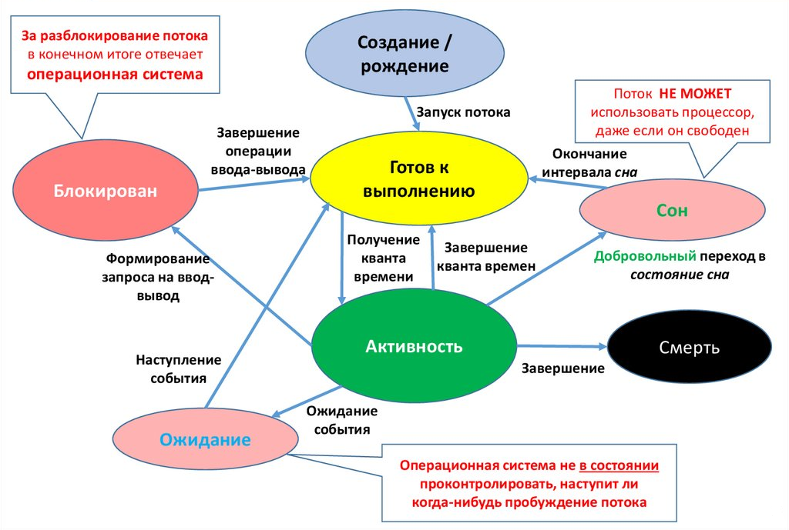

JAVA Multithreading
Вопросы для собеседования
Вопросы:
Чем процесс отличается от потока?
Потоки выполнения процесса можно уподобить нескольким вместе работающим поварам. Все они готовят одно блюдо,
читают одну и ту же кулинарную книгу с одним и тем же рецептом и следуют его указаниям, причём необязательно
все они читают на одной и той же странице.
| Поток |
Процесс |
| Поток имеет стэк – свою память для исполнения. |
Процесс – это совокупность кода и данных, финкционирующих в виртуальном (адресном) пространстве. |
| Потоки выполнения существуют как составные элементы процессов. |
Процессы, как правило, независимы. |
|
Несколько потоков выполнения внутри процесса совместно используют информацию о состоянии, а также память
и другие вычислительные ресурсы.
|
Несут значительно больше информации о состоянии. |
| Потоки выполнения совместно используют их адресное пространство. |
Операционная система (ОС) для каждого процесса создает своё, так называемое «виртуальное адресное
пространство» в памяти, к которому процесс имеет прямой доступ.
|
|
Взаимодействуют только через предоставляемые системой механизмы связей между процессами (файлы, каналы
связи..)
|
|
Переключение контекста между потоками выполнения в одном процессе, как правило, быстрее, чем
переключение контекста между процессами.
|
|
|
Потоки расходуют существенно меньше ресурсов, чем процессы, в процессе выполнения работы выгоднее
создавать дополнительные потоки и избегать создания новых процессов.
|
|
Когда запускается любое приложение, то начинает выполняться поток, называемый главным потоком (main).
От него порождаются дочерние потоки.
Главный поток, как правило, является последним потоком, завершающим выполнение программы.
Несмотря на то, что главный поток создаётся автоматически, им можно управлять через объект класса Thread. Для
этого нужно вызвать метод currentThread(), после чего можно управлять потоком.
Класс Thread содержит несколько методов для управления потоками:
| Метод |
Описание |
| getName() |
получить имя потока |
| getPriority() |
получить приоритет потока |
| isAlive() |
определить, выполняется ли поток |
| join() |
ожидать завершение потока |
| run()* |
запуск потока
В нем пишется выполняемый код
|
| sleep() |
приостановить поток на заданное время |
| start() |
запустить поток
Запускает переопределенный метод run()
|
* Если просто запустить run() не будет параллельности выполнения - просто выполниться
метод run().
Thread и Runnable
| Thread |
Runnable |
| Класс |
Интерфейс |
| Можно наследоваться только от одного родительского класса Thread |
Можно имплементить много интерфейсов |
| Свои конструкторы и методы |
Только метод run() |
| Имплементироует Runnable |
|
Thread:
public class ThreadTest1 {
public static void main(String[] args) throws InterruptedException {
AnotherTask thread = new AnotherTask();
thread.start();
for (int i = 0; i < 3; i++) {
System.out.println("m" + i);
Thread.sleep(1000);
}
thread.join();
System.out.println("End");
}
}
class AnotherTask extends Thread {
@Override
public void run() {
for (int i = 0; i < 5; i++) {
System.out.println("r" + i);
try {
Thread.sleep(1000);
}
catch (InterruptedException e) {
System.out.println("Interrupt");
}
}
}
}
Runnable
public class ThreadTest {
public static void main(String[] args) throws InterruptedException {
AnotherRun anotherRun = new AnotherRun();
Thread childTread = new Thread(anotherRun);
childTread.start();
for (int i = 0; i < 3; i++) {
System.out.println("m" + i);
Thread.sleep(1000);
}
childTread.join();
System.out.println("End");
}
}
class AnotherRun implements Runnable {
@Override
public void run() {
for (int i = 0; i < 5; i++) {
System.out.println("r" + i);
try {
Thread.sleep(1000);
}
catch (InterruptedException e) {
System.out.println("Interrupt");
}
}
}
}
Конструкторы Thread
В классе Thread определены семь перегруженных конструкторов, большое количество методов, предназначенных для
работы с потоками, и три константы (приоритеты выполнения потока).
Конструкторы класса Thread:
Пример создания потока, который входит в группу, реализует интерфейс Runnable и имеет свое уникальное название:
Runnable r = new MyClassRunnable();
ThreadGroup tg = new ThreadGroup();
Thread t = new Thread(tg, r, "myThread");
Группы потоков удобно использовать, когда необходимо одинаково управлять несколькими потоками.
Например, несколько потоков выводят данные на печать и необходимо прервать печать всех документов поставленных в
очередь. В этом случае удобно применить команду ко всем потокам одновременно, а не к каждому потоку отдельно. Но
это можно сделать, если потоки отнесены к одной группе.
Несмотря на то, что главный поток создаётся автоматически, им можно управлять. Для этого необходимо создать
объект класса Thread вызовом метода currentThread().
Методы класса Thread
Наиболее часто используемые методы класса Thread для управления потоками:
| Метод |
Описание |
| long getId() |
получение идентификатора потока |
| String getName() |
получение имени потока |
| int getPriority() |
получение приоритета потока |
| State getState() |
определение состояния потока |
| void interrupt() |
прерывание выполнения потока |
| boolean isAlive() |
проверка, выполняется ли поток |
| boolean isDaemon() |
проверка, является ли поток «daemon» |
| void join() |
ожидание завершения потока |
| void join(millis) |
ожидание millis милисекунд завершения потока |
| void notify() |
«пробуждение» отдельного потока, ожидающего «сигнала» |
| void notifyAll() |
«пробуждение» всех потоков, ожидающих «сигнала» |
| void run() |
запуск потока |
| void setDaemon(bool) |
определение «daemon» потока |
| void setPriority(int) |
определение приоритета потока |
| void sleep(int) |
приостановка потока на заданное время |
| void start() |
запуск потока |
| void wait() |
приостановка потока, пока другой поток не вызовет метод notify() |
| void wait(millis) |
приостановка потока на millis милисекунд или пока другой поток не вызовет метод notify() |
Жизненный цикл потока
-
Новый − Новый поток начинает свой жизненный цикл в состоянии нового.
Он сохраняет это состояние до тех пор, пока программа не запустит поток.
Его также называют созданным потоком.
-
Запущенный − После запуска нового потока он становится запущенным.
Считается, что поток в этом состоянии выполняет свою задачу.
-
Ожидающий − Поток приостановлен и ожидает, пока другой поток выполнит задачу.
Поток переходит обратно в запущенное состояние только после того, когда другой поток сигнализирует
ожидающему потоку продолжить выполнение.
-
Ожидающий с ограничением по времени
− Поток в этом состоянии переходит обратно в запущенное состояние, когда
истекает этот временной интервал или когда происходит событие, которого он ожидает.
-
Остановленный − Запущенный поток переходит в остановленное состояние, когда он завершает
свою задачу или иным образом завершается.
Монитор
Мютекс («mutual exclusion» — «взаимное исключение») – это специальный объект для синхронизации процессов. Он
может принимать два состояния – занят и свободен.
Если упростить, то мютекс – это boolean-переменная, которая
принимает два значения: занят(true) и свободен(false).
Когда процесс хочет монопольно владеть некоторым объектом, она помечает его мютекс занятым, а когда закончила
работу с ним – помечает его мютекс свободным.
Мютекс прикреплен к каждому объекту в Java.
От программиста он скрыт.
А работать с мютексом в Java можно посредством монитора.
Прямой доступ к мютексу есть только у Java-машины.
Монитор – это специальный механизм (кусок кода) котрый гарантирует, что только один поток может выполнять данный
раздел (или разделы) кода в любой момент времени.
Надстройка над мютексом, который обеспечивает правильную работу с ним. Ведь мало пометить, что объект занят,
надо еще обеспечить, чтобы другие потоки не пробовали воспользоваться занятым объектом.
В Java монитор реализован с помощью ключевого слова synchronized.
Блок synchronized, то компилятор Java заменяет его тремя кусками кода:
- В начале блока synchronized добавляется код, который отмечает мютекс как занятый.
- В конце блока synchronized добавляется код, который отмечает мютекс как свободный.
-
Перед блоком synchronized добавляется код, который смотрит, если мютекс занят – то поток должен ждать его
освобождения.
Все immutable объекты являются thread-safe. Все объекты, к которым происходит обращение из разных потоков,
должны быть thread-safe (безопасен).
Только методы и блоки могут быть синхронизированы, но не переменные и классы. Если метод, в котором содержится
критически важная «многопоточная» логика, статический, синхронизация будет осуществляться по классу.
Синхронизация
Синхронизация
Синхронизация это механизм, позволяющий обеспечить целостность какого-либо ресурса (файл, данные в памяти),
когда он используется несколькими процессами или потоками в случайном порядке.
Синхронизация это процесс, который позволяет выполнять потоки параллельно.
В Java все объекты имеют одну блокировку, благодаря которой только один поток одновременно может получить доступ
к критическому коду в объекте. Такая синхронизация помогает предотвратить повреждение состояния объекта. Если
поток получил блокировку, ни один другой поток не может войти в синхронизированный код, пока блокировка не будет
снята. Когда поток, владеющий блокировкой, выходит из синхронизированного кода, блокировка снимается. Теперь
другой поток может получить блокировку объекта и выполнить синхронизированный код. Если поток пытается получить
блокировку объекта, когда другой поток владеет блокировкой, поток ждет пока блокировка не снимется.
Объявить метод синхронизированным можно только тогда, когда вся логика внутри него выполняется одним потоком
одновременно.
| Цель |
Пример |
| Объект |
public void myMethod() {
private Object key = new Object();
synchronized (key) {
System.out.println("Hi I'm synchronized block!");
}
}
|
| Метод |
synchronized void myMethod() {
System.out.println("Hi I'm synchronized method!");
}
|
| Статический метод |
static void myMethod() {
synchronized(MyObject.class) {
System.out.println("Hi I'm synchronized method!");
}
}
|
Недостаток
использования synchronized является как раз то, что другие
потоки вынуждены ждать, пока нужный
объект или метод освободится. Это создает так называемый "bottle neck" ("узкое место") в программе - и скорость
работы может пострадать.
Способы синхронизации в Java
-
Системная синхронизация с использованием wait()/notify()
Когда мы вызываем wait () – это заставляет текущий поток ждать, пока какой-либо другой поток вызовет
notify () или notifyAll () для того же объекта.
Поток, который ждет выполнения каких-либо условий, вызывает у этого объекта метод wait(), предварительно
захватив его монитор, wait() освобождает монитор и переводит поток в ожидание, далее поток ждет
notify().
На этом работа потока приостанавливается. Другой поток может вызвать на этом же самом объекте метод
notify() (опять же, предварительно захватив монитор объекта), в результате чего, ждущий на объекте поток
«просыпается» и продолжает свое выполнение.
Монитор надо захватывать в явном виде, через
synchronized-блок, потому как методы wait()/notify() не синхронизированы!
notifyAll () - Этот метод просто пробуждает все потоки, которые ожидают на мониторе этого объекта.
-
Системная синхронизация с использованием join()
Метод join(), вызванный у экземпляра класса Thread, позволяет текущему потоку остановиться до того
момента, как поток, связаный с этим экземпляром, закончит работу.
Главный поток ставиться на паузу до окончания дочернего потока.
-
Использование классов из пакета java.util.concurrent
Пакет предоставляет набор классов для организации межпоточного взаимодействия.
Примеры таких классов – Atomic, Lock, Semaphore, ForkJoinTask и пр.
Концепция данного подхода заключается в использовании атомарных операций и переменных.
Методы wait(), notify() и notifyAll()
| wait() |
notify() |
|
Поток входит в блок Synchronized
Объект-монитор − занят
|
Методы notify/notifyAll можно вызвать у объекта-монитора и только, когда этот монитор занят – т.е.
внутри блока synchronized.
Метод notifyAll снимает с паузы все потоки, которые стали на паузу с помощью данного
объекта-монитора.
|
|
Поток заблокировал монитор и не может работать дальше, т.к. каких-то данных еще не хватает – поток
останавливается и ждет их, остальные потоки, которые ждут освобождения монитора, тоже ждут – очень
дорого
|
|
Поток ставиться на паузу методом wait() - освобождает монитор для других потоков
|
«Висеть» на методе wait() одного монитора могут сразу несколько потоков. При вызове notify() только один из них
выходит из wait() и пытается захватить монитор, а затем продолжает работу со следующего после wait() оператора.
Какой из них выйдет - заранее неизвестно. А при вызове notifyAll(), все висящие на wait() потоки выходят из
wait(), и все они пытаются захватить монитор. Понятно, что в любой момент времени монитор может быть захвачен
только одним потоком, а остальные ждут своей очереди. Порядок очереди определяется планировщиком потоков Java.
Состояние потока
|
|
|
Thread twoThread = new Thread("Yulia");
|
Новый (New)
После создания экземпляра потока, он находится в состоянии "Новый" до тех пор, пока не вызван метод
start(). В этом состоянии поток не считается живым.
|
|
twoThread.start();
|
Работоспособный (Runnable)
Поток переходит в состояние "Работоспособный", когда вызывается метод start(). Поток может перейти в
это состояние также из состояния "Работающий" или из состояния "Блокирован". Когда поток находится в
этом состоянии, он считается живым.
|
| Планировщик потоков выбирает поток |
Работающий (Running)
Поток переходит из состояния "Работоспособный" в состояние "Работающий", когда Планировщик потоков
выбирает его как работающий в данный момент.
|
|
|
Живой, но не работоспособный (Alive, but not runnable)
Поток может быть живым, но не работоспособным по нескольким причинам:
-
Ожидание (Waiting)
Поток переходит в состояние "Ожидания", вызывая метод wait(). Вызов notify() или
notifyAll() может перевести поток из состояния "Ожидания" в состояние "Работоспособный".
-
Сон (Sleeping)
Метод sleep() переводит поток в состояние 'Сна' на заданный промежуток времени в
миллисекундах.
-
Блокировка (Blocked)
Поток может перейти в это состояние, в ожидании ресурса, такого как ввод/вывод или из-за
блокировки другого объекта. В этом случае поток переходит в состояние "Работоспособный",
когда ресурс становится доступен.
|
|
run()
|
Мёртвый (Dead)
Поток считается мёртвым, когда его метод run() полностью выполнен. Мёртвый поток не
может перейти ни в какое другое состояние, даже если для него вызван метод start().
|
Не из ждавы, но написано прикольно:

Семафор
Semaphore – это новый тип синхронизатора: семафор со счётчиком, реализующий шаблон синхронизации Семафор.
Доступ управляется с помощью счётчика:
изначальное значение счётчика задаётся в конструкторе при создании синхронизатора, когда поток заходит в
заданный блок кода, то значение счётчика уменьшается на единицу, когда поток его покидает, то увеличивается.
Если значение счётчика равно нулю, то текущий поток блокируется, пока кто-нибудь не выйдет из защищаемого блока.
Semaphore используется для защиты дорогих ресурсов, которые доступны в ограниченном количестве, например
подключение к базе данных в пуле.
Установить количество разрешений для доступа к ресурсу можно с помощью конструкторов класса Semaphore:
где:
permits - указывает на количество допустимых разрешений для доступа к ресурсу;
fair - позволяет установить очередность получения доступа.
Если он равен true, то разрешения будут предоставляться ожидающим потокам в том порядке, в каком они запрашивали
доступ. Если же он равен false, то разрешения будут предоставляться в неопределенном порядке.
Для получения разрешения у семафора надо вызвать метод acquire()
После вызова этого метода, пока поток не получит разрешение, он блокируется.
Для получения одного разрешения применяется первый вариант, а для получения нескольких разрешений - второй
вариант.
Для освобождения разрешение надо использовать метода release():
void release()
void release(int permits)
Первый вариант метода освобождает одно разрешение, а второй вариант - количество разрешений, указанных в
permits.